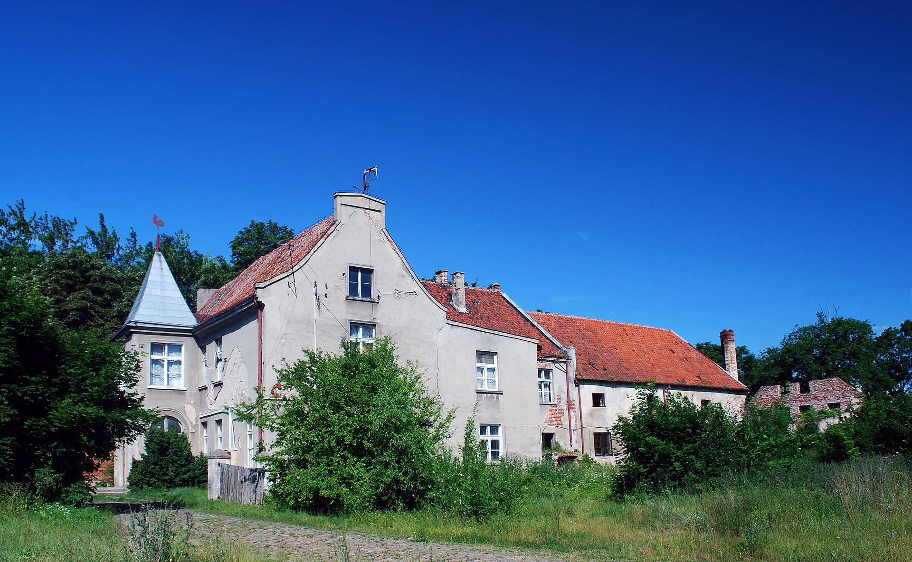
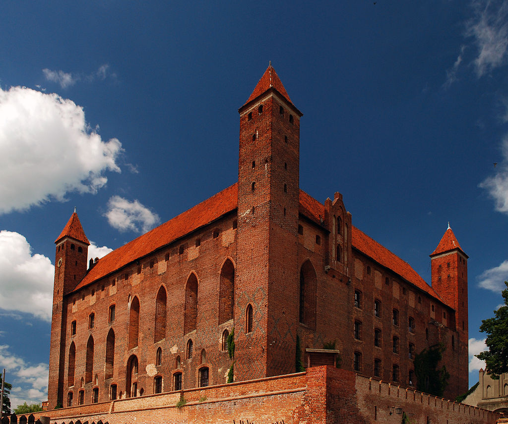
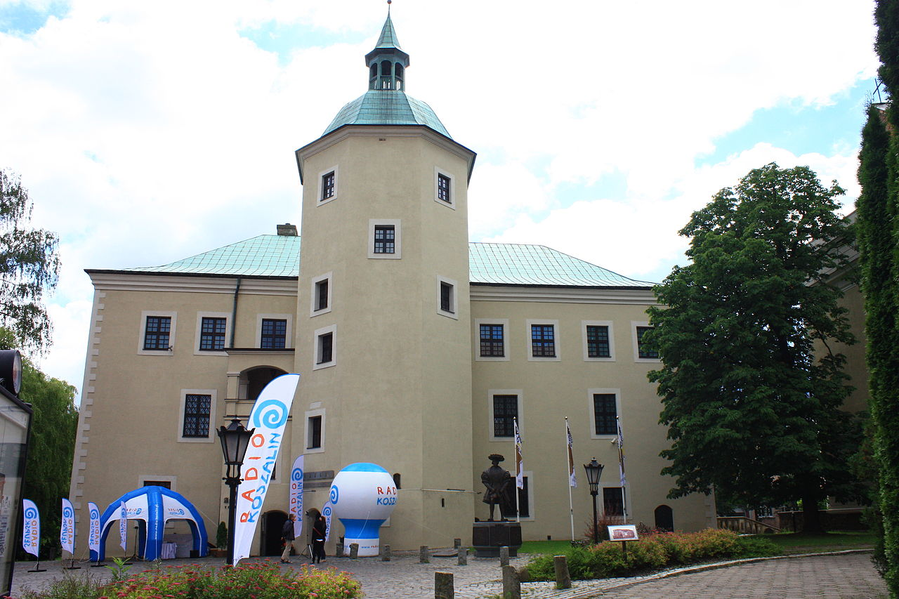

Miejsca do odwiedzenia
Zamek w Łapalicach

Budynek w stanie surowym w Łapalicach w pobliżu jeziora Rekowo. Powstał jako samowola budowlana. Jego forma nawiązuje do architektury rezydencjonalnej, przez co potocznie nazywany jest zamkiem.
Czytaj więcejZamek krzyżacki w Grabinach-Zameczku
Zamek krzyżacki, obecnie dom mieszkalny z kaplicą filialną pw. Świętej Trójcy, XIV/XV – XIX w., nr rej.: 667 z 27.10.1973.
Czytaj więcejZamek krzyżacki w Gniewie
Zamek zbudowany przez Zakon krzyżacki na planie czworoboku po 1290 roku i rozbudowany w XIV i XV wieku, następnie od połowy XV do 1772 roku siedziba polskich starostów, w 1664 roku należał do starostwa gniewskiego.
Czytaj więcejZamek Książąt Pomorskich w Słupsku
Wybudowany w 1507 r. za panowania księcia Bogusława X w stylu gotyckim.
Czytaj więcej